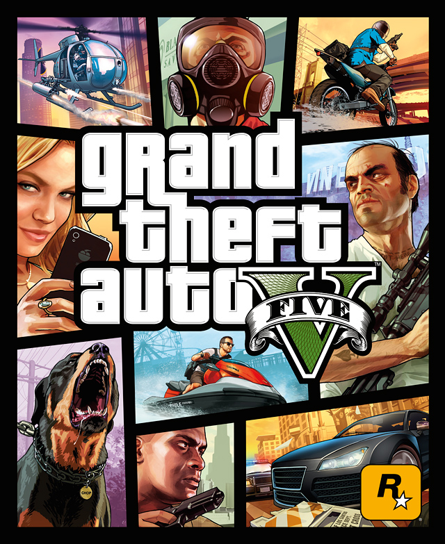
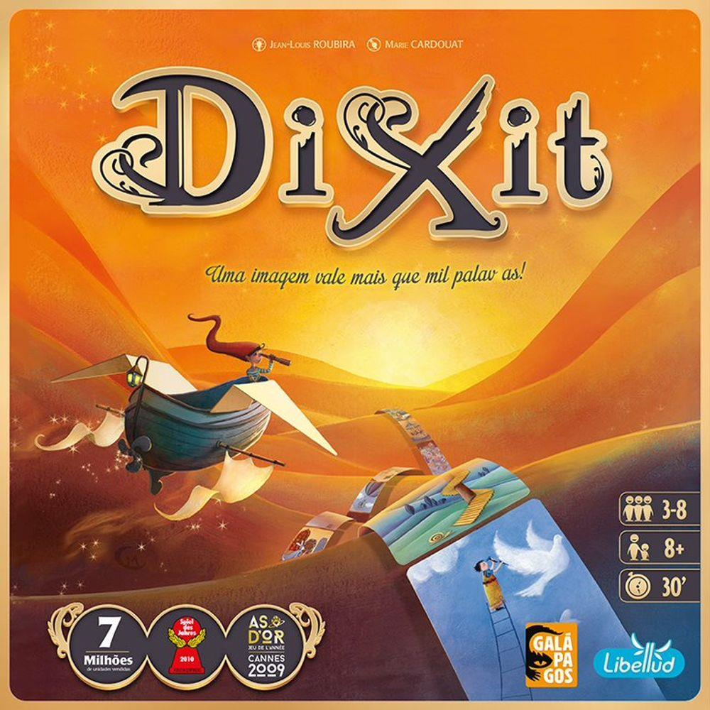

Jogar: gosto bastante de jogar jogos de tabuleiro em grupo, alguns dos meus preferidos são Dixit, Seven Wonders, Abyss, Stone Age Duel, etc. Gosto muito de jogar jogos de videogame também, como GTA, COD, GOW, Uncharted, entre outros. Mas atualmente estou jogando somente Teamfight Tatics.

.


Cozinhar: gosto de fazer almoços e jantares final de semana em casa e de aprender novas receitas.
Dirigir: uma das coisas que mais gosto de fazer é dirigir, adoro fazer viagens longas de carro com minha família. Sou apaixonado por adrelina e por consequência por carros esportivos.
Viajar: viajar sempre traz experiências diferentes e contato com pessoas diferentes, e é muito legal conhecer lugares novos.
Festivais: gosto muito de ir em festivais e shows em geral mas principalmente de eletrônica. Em dezembro fui no Universo Paralello
Não sei tocar nenhum intrumento musical.
Tenho 4 tatuagens, a primeira que fiz é a maior e a minha preferida.
Eu sou desbocado e falo bastante palavrão
Sou indeciso, fico horas pra escolher.
Adoro ir num bar com meus irmãos/amigos e beber, é um dos meus programas preferidos!
Dirijo desde os meus 14 anos.
Minha comida preferida é churrasco.